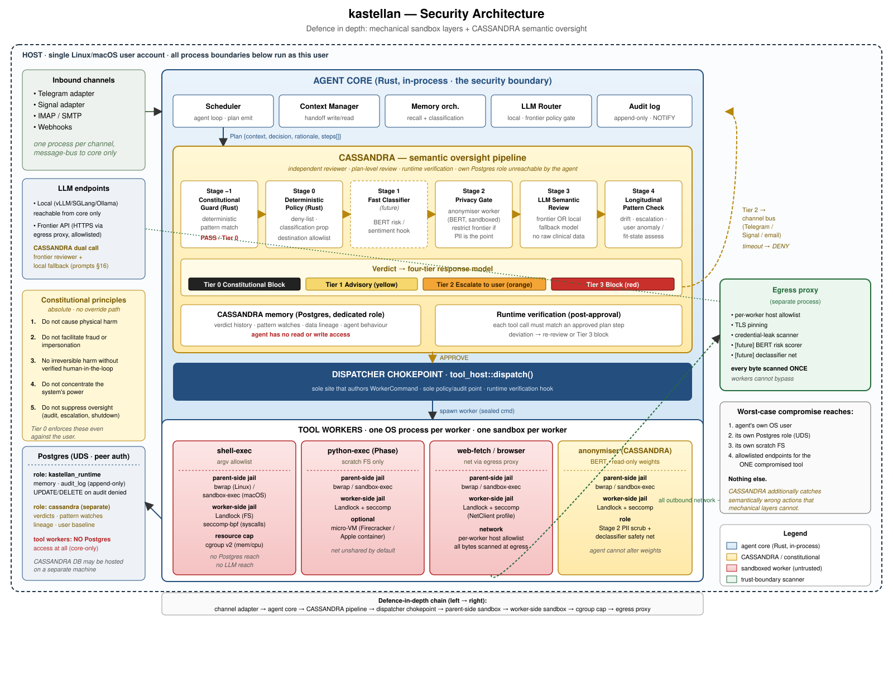
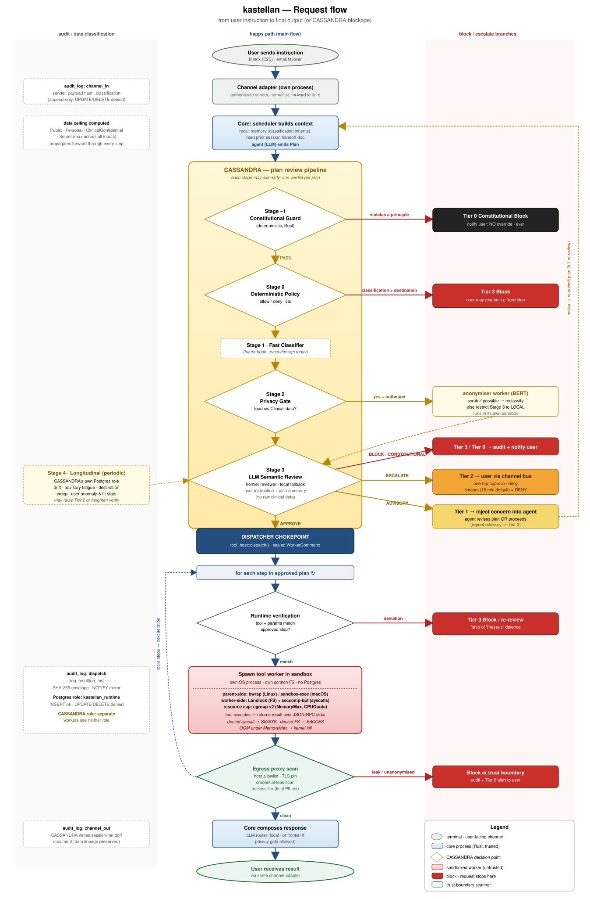

The walls, layer by layer
The threat-model invariant first — then every mechanism that enforces it.
Worst-case compromise — of the LLM, a tool, a dependency, or agent-authored code — reaches at most the agent’s own OS user, its own Postgres role, its own scratch filesystem, and the explicitly allowlisted endpoints of the one tool that was compromised. Nothing else.

Defence in depth
-
One process, one sandbox per tool. Every tool invocation gets its own OS process inside its own kernel jail — bubblewrap on Linux, Seatbelt on macOS, optionally an Apple container micro-VM. Workers never share a sandbox with each other or with the core.
-
Double containment. The parent installs the OS sandbox at spawn; the worker then locks itself down again with Landlock and seccomp before serving a single request. A kernel bug in either layer alone does not breach the worker.
-
The dispatcher chokepoint. One function authors every worker command, consults policy, and writes the audit row. Channels and schedulers call it — they can never spawn workers themselves.
-
CASSANDRA. Semantic oversight on top of mechanical sandboxing: every plan is reviewed before any tool runs, against five constitutional constraints — no physical harm, no fraud or impersonation, no irreversible action without a verified human in the loop, no power concentration, no oversight suppression — that no user, admin, or configuration change can override.
-
The egress boundary. Outbound traffic goes through a per-worker proxy that enforces host allowlists, resolves DNS itself, and rejects private and link-local addresses — with every allow and block decision audited.
-
An append-only audit log. Postgres role grants make audit rows append-only at the database layer, mirrored to disk. The agent cannot rewrite its own history.

What we don’t claim
macOS Seatbelt is weaker than the Linux stack — a documented asymmetry, not a footnote. The egress proxy does not force-route workers yet (that work is in design). CASSANDRA’s LLM review stages are still deterministic stubs. The full, current threat model lives in the repo: docs/threat-model.md